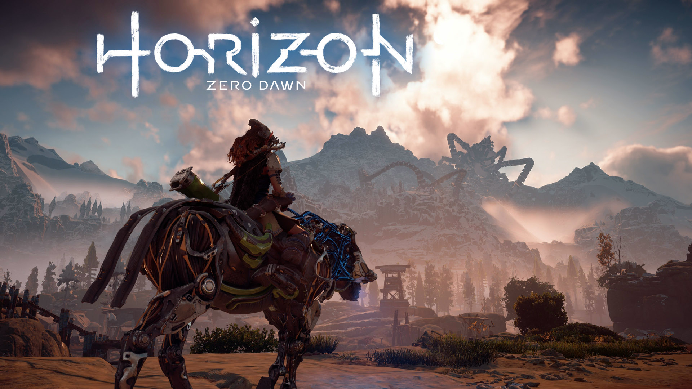

Sobre o Gamer
Horizon Zero Dawn decorre num mundo pós-apocalíptico repleto de máquinas inspiradas em animais, umas mais ferozes do que outras. Aloy é a protagonista do jogo rejeitada pela tribo Nora (a tribo Nora consiste num grupo de caçadores ferozes que vivem nas montanhas e adoram a natureza, conhecida carinhosamente por eles como "All-Mother), é colocada sobre os cuidados de Rost, um outro exilado que se torna na sua figura paternal. Apesar de uma infância difícil, Aloy aprende a sobreviver no mundo e torna-se numa caçadora de máquinas bastante habilidosa, especialmente com a ajuda do seu Focus um pequeno dispositivo que lhe concede acesso a uma realidade aumentada, permitindo-lhe ver pontos fracos de máquinas e áreas ocultas do mundo.
No entanto, o desejo de Aloy em perceber o seu passado torna-se cada vez mais intenso - e, para isso, ela terá de regressar à tribo que a expulsou inicialmente e participar num torneio chamado The Proving, que é realizado todos os anos. Após anos de treino, Aloy entra no The Proving, ansiosa para descobrir quem era a sua mãe. Infelizmente, as coisas não correm como esperado.
-

- 
-